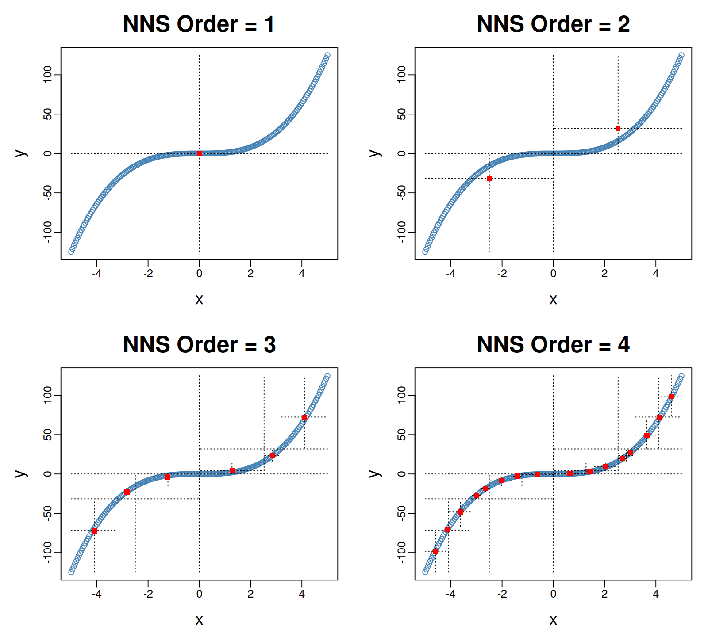
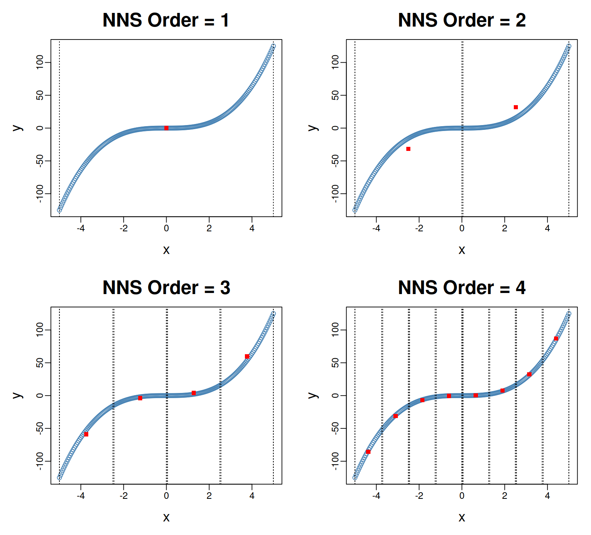

Chapter 18 Recursive Mean-Split Estimation
Part V of the book turns from probability representation and inference to nonparametric estimation. The goal of estimation is to recover unknown functional relationships from data without imposing a predetermined parametric form.
A central object in many statistical problems is the conditional mean function
\[ f(x) = E[Y \mid X = x]. \]
Classical regression models estimate this relationship by specifying a functional form — linear, polynomial, or otherwise — and fitting parameters to the data.
Nonparametric methods instead estimate \(f(x)\) directly from observations. Partition-based estimators are among the most intuitive approaches: the predictor space is divided into regions, and the conditional mean is estimated locally within each region.
This chapter introduces the recursive mean-split estimator, the partition-based nonparametric method at the core of the NNS framework. Recursive splitting builds local regression points from the observed data. The arithmetic-mean option (noise.reduction = "mean") targets the conditional mean; the package default (noise.reduction = "off") uses NNS.gravity, a different central-tendency functional. A proof about cell means need not be a proof about gravity, medians, modes, or the complete fitted curve.
NNS.part offers both joint partitioning and predictor-only partitioning. Joint splitting uses local centers of both \(X\) and \(Y\) to describe co-partial-moment quadrants; a new predictor does not reveal which response-defined quadrant it belongs to. Predictor-only splitting uses a local center of \(X\), yielding cells in predictor space. Crucially, the numeric-order regression paths in NNS.reg construct NNS.part(..., type = "XONLY") boundaries per predictor, although order = NULL uses response-dependent directional dependence to choose the depth. Thus data-adaptive selection of a predictor-space partition must be distinguished from partitioning a new observation in unobserved response space.
The mathematical question of consistency has two levels. First, does the NNS predictor-space partition architecture support consistent local estimation when refined appropriately? Second, do particular settings of NNS.reg (reducer, order, stopping behavior, interpolation, neighbor weights, and dimension reduction) realize those sufficient conditions? The answer to the first can be affirmative without an unconditional affirmative answer to the second. In particular, noise.reduction = "mean" identifies the appropriate local estimator of the conditional mean; consistency also depends on the refinement sequence and the final prediction rule.
The earlier NNS studies by Vinod and Viole (2018) and Viole (2021) emphasize three strengths of this construction: the adaptive geometry of its partial-moment partitions, the ability of sufficiently fine partitions to interpolate observed functions, and competitive finite-sample performance. Their arguments motivate the asymptotic questions developed here. Importantly, exact interpolation of noiseless observations, statistical consistency under noisy observations, and consistency of an implemented default are three different statements. They should not be conflated.
Classical work on data-dependent partitions, especially Nobel (1996), shows that using responses to select partitions does not itself prevent consistent nonparametric regression. This chapter develops a direct consistency argument for NNS-type predictor cells, connects it to the full regression-point interpolation rule, and distinguishes that consistency-capable architecture from particular finite-sample choices. The distinctive NNS contribution remains benchmark-relative splitting, partial-moment geometry, locally representative regression points, and their use in prediction.
18.1 Motivation for Partition-Based Estimation
Suppose we observe independent pairs
\[ (X_1, Y_1), \dots, (X_n, Y_n), \]
where
\[ Y_i = f(X_i) + \varepsilon_i, \]
and
\[ E[\varepsilon_i \mid X_i] = 0. \]
The objective is to estimate the unknown regression function
\[ f(x) = E[Y \mid X = x]. \]
18.1.1 Parametric approaches
Parametric regression assumes a functional form such as
\[ f(x) = \beta_0 + \beta_1 x. \]
While simple and interpretable, this assumption can be severely restrictive when the relationship between variables is nonlinear.
18.1.2 Nonparametric alternatives
Nonparametric estimators relax these assumptions. Common examples include
- kernel regression,
- local polynomial regression,
- partition estimators.
Kernel methods estimate \(f(x)\) through weighted averages of nearby observations. They use a bandwidth parameter that determines the smoothing scale. Their weights are kernel evaluations at observed distances, not probabilities assigned to individual observations. Compactly supported kernels with a sufficiently small bandwidth can interpolate distinct predictor values; interpolation is also possible with local polynomials and other smoothers.
Partition estimators divide the predictor space into regions and compute averages within each region. The recursive mean-split method uses a partial-moment splitting rule, anchoring boundaries to local mean benchmarks. Increasing the order permits finer partitions. Whether this gives consistent estimation or exact interpolation depends on the stopping rule, predictor ties, reducer, and prediction procedure.
18.2 Consistency of Data-Driven NNS Partitions
18.2.1 The relevant regression theory
Partition-based regression must be distinguished from density estimation and classification. Stone (1977) gives foundational consistency results for local averaging. Lugosi and Nobel (1996) analyze density estimation and classification using data-driven partitions. The directly relevant regression result is Nobel (1996), Histogram Regression Estimation Using Data-Dependent Partitions. Nobel establishes strong integrated \(L^2\)-consistency for bounded-response histogram regression when the selected predictor-space cells shrink appropriately, the relevant cell count is sublinear in sample size, and the combinatorial partitioning number grows subexponentially. The selected partition is allowed to depend on the entire training sample, including its responses. In Nobel’s Theorem 1, the sufficient requirements are (i) sublinear restricted cell counts on compact subsets, (ii) subexponential growth of the partitioning number, and (iii) shrinking selected cells on sets carrying arbitrarily high predictor probability. Writing \(\Pi_n\) for the family of admissible partitions, \(m(\Pi_n:V)\) for the greatest number of cells intersecting a compact \(V\), and \(\Delta_n^*(\Pi_n)\) for the combinatorial partitioning number, the complexity conditions read
\[ \frac{m(\Pi_n:V)}{n}\longrightarrow0, \qquad \frac{\log\Delta_n^*(\Pi_n)}{n}\longrightarrow0. \]
The separate shrinking-cell condition must be verified for the rule’s selected partition; complexity control alone does not imply it. The general theorem does not require a prescribed minimum count in every cell. Its conclusion is strong integrated \(L^2(P_X)\)-consistency for the partition-cell mean estimator, not pointwise consistency of an arbitrary interpolating function.
The presence of response-dependent order selection in NNS.reg is therefore not, on its own, a mathematical objection to consistency. Nor does the mere availability of Nobel’s theorem prove a particular implementation satisfies its hypotheses. The admissible partition family, realized cell refinement, and final prediction operator must still be examined.
18.2.2 A direct consistency proposition for NNS-type cells
The rectangular geometry of predictor-only partitions permits a transparent, stronger-than-necessary local occupancy assumption and a proof that remains valid under response-dependent partition selection.
Proposition (Data-adaptive predictor-cell means). Let \((X_i,Y_i)\), \(i=1,\ldots,n\), be i.i.d. observations with \(X_i\in\mathbb R^d\), fixed \(d\), and \(|Y_i|\le M<\infty\). Choose a version of \(f(x)=E[Y\mid X=x]\) that is continuous at the predictor value \(x\) of interest. Let \(A_n(x)\) be an axis-aligned rectangular cell containing \(x\), selected by any measurable rule using the full training sample \((X_i,Y_i)\). Define
\[ N_{n,x}=\#\{i:X_i\in A_n(x)\},\qquad \widehat f_n(x)=\frac{1}{N_{n,x}}\sum_{i:X_i\in A_n(x)}Y_i, \]
with value zero when the cell is empty. Suppose there is a deterministic sequence \(m_n\) such that
\[ \frac{m_n}{\log(n+1)}\longrightarrow\infty,\qquad P\{N_{n,x}\ge m_n\}\longrightarrow1, \qquad \operatorname{diam}(A_n(x))\xrightarrow{P}0. \]
Then \(E[(\widehat f_n(x)-f(x))^2]\to0\). No independence between the chosen cell and the responses is required.
Proof. Condition on the observed predictors \(X_1,\ldots,X_n\), and set \(\varepsilon_i=Y_i-f(X_i)\). For every fixed nonempty rectangular sample-membership set \(S\), the \(\varepsilon_i\), \(i\in S\), are conditionally independent, centered, and bounded, so Hoeffding’s inequality gives
\[ P\left(\left|\frac{1}{|S|}\sum_{i\in S}\varepsilon_i\right|>t\ \middle|\ X_1,\ldots,X_n\right) \le 2\exp\left(-\frac{|S|t^2}{2M^2}\right). \]
For fixed predictor observations, at most \((n+1)^{2d}\) different index subsets can be selected by axis-aligned rectangles: each coordinate interval has at most \((n+1)^2\) possible start/end rank choices. A union bound therefore controls the noise average simultaneously over every rectangle having at least \(m_n\) observations:
\[ P\left(\sup_{\substack{A\ \mathrm{rectangle}\\N_n(A)\ge m_n}} \left|\frac{1}{N_n(A)}\sum_{X_i\in A}\varepsilon_i\right|>t\right) \le 2(n+1)^{2d}\exp\left(-\frac{m_nt^2}{2M^2}\right)\longrightarrow0. \]
This simultaneous event includes a cell chosen after observing the responses. On the selected cell, the other error term is
\[ \left|\frac{1}{N_{n,x}}\sum_{X_i\in A_n(x)}f(X_i)-f(x)\right| \le\sup_{z\in A_n(x)}|f(z)-f(x)|\xrightarrow{P}0 \]
by continuity and shrinking diameter. The probability of an empty or underoccupied selected cell vanishes by hypothesis. As the squared estimation error is bounded by \(4M^2\), convergence in probability implies convergence of its expectation. \(\square\)
One can also read the proof as a finite-sample error decomposition. For any \(t>0\), if the selected cell has at least \(m_n\) observations, its noise average is controlled with failure probability at most
\[ 2(n+1)^{2d}\exp\left(-\frac{m_n t^2}{2M^2}\right), \]
irrespective of whether the partition was chosen using \(Y\). Meanwhile continuity controls the bias on the shrinking cell. This exhibits the two contributions of NNS consistency: controlled adaptive complexity and appropriate local resolution.
This is a sufficient pointwise theorem; it is not a necessary characterization of all consistent schemes. It demands \(m_n/\log n\to\infty\) for an elementary uniform bound. Nobel’s more general integrated theorem can dispense with minimum counts in individual cells, provided its global complexity and refinement requirements hold. If this proposition’s assumptions hold for \(P_X\)-almost every \(x\), bounded convergence also yields weak integrated \(L^2(P_X)\)-consistency of the predictor-cell mean estimator.
18.2.3 How the proposition maps onto the NNS implementation
In the current numeric-order regression code, NNS.reg calls NNS.part(x, y, type = "XONLY", ...) to construct univariate regression points. In multivariate regression it builds per-regressor predictor boundaries and forms occupied intersections. A one-dimensional predictor interval, or a fixed-dimensional intersection of predictor intervals, is an axis-aligned rectangle. The theorem’s cell-family argument therefore tolerates response-dependent choices among candidate orders, including the dependence heuristic.
The proposition does not assert that the hypotheses hold automatically. An asymptotic consistency regime requires a sequence of fitted models with increasing resolution, sufficiently large local sample support, and shrinking cells at the prediction points under study. For instance, a sample-size-dependent sequence of orders can be permitted to grow while the number of occupied groups stays small relative to \(n\); whether a particular mean- or gravity-split recursion achieves the required diameter and occupancy bounds depends on the predictor distribution and stopping behavior. An observed finite-sample order, or a maximum-order setting alone, proves neither property.
18.2.4 A consistency-compatible refinement regime
The conditions above are not contradictory. Consider a sequence of one-dimensional, predictor-only partitions in which every split remains sufficiently balanced and each new level contracts the widths of the cells relevant to a query. If the selected depth grows as
\[ O_n=\lfloor \alpha\log_2 n\rfloor, \qquad 0<\alpha<1, \]
then the potential number of level-\(O_n\) intervals is of order \(2^{O_n}\asymp n^\alpha\), while typical occupancies in well-balanced cells are of order \(n^{1-\alpha}\). Under regular predictor distributions and a verified balance-and-contraction property, these two trends can yield both
\[ \operatorname{diam}(A_n(x))\to0, \qquad \frac{N_n(A_n(x))}{\log n}\to\infty. \]
For a fixed predictor dimension \(d\), analogous conditions must be checked for the intersections of the per-regressor partitions, not merely for each marginal interval. The number of occupied joint cells can be much larger than the number of cells of any one predictor.
This is an illustration of a suitable asymptotic tuning regime, not a claim about an already available automatic NNS.reg option. In particular, one must prove or verify the behavior of the actual mean-split recursion, including its dependence on the predictor distribution and its stopping criteria; knowing that the requested order grows does not alone ensure balanced refinement.
The proposition describes arithmetic response averages. NNS.reg uses additional prediction operators: linear interpolation of univariate regression points, and distance-based neighbor combinations of rows of the multivariate regression point matrix (RPM). A direct transfer to these complete predictors additionally requires that the points receiving nonnegligible weight become local to the query and that the weighted response-center errors vanish. Interpolation between nearby, well-supported centers is compatible with consistency; its extrapolation at the support boundary and the package’s extra singleton response anchors require separate attention. In the multivariate path, a neighbor count of one may be adequate if its RPM row itself averages an increasing number of observations, but not if it is merely a noisy singleton.
18.2.5 Corollary: consistency under localized univariate interpolation
The cell-mean result is not the whole NNS.reg prediction rule. In univariate numeric regression with smooth = FALSE, the package sorts its regression points and linearly interpolates their response coordinates, adding the observed predictor-range endpoints as anchors. The following corollary states when this additional operation preserves consistency.
Corollary (local linear interpolation of data-adaptive NNS regression points). Maintain the sampling, boundedness, fixed-dimensional complexity, and continuity assumptions of the proposition, now with a single predictor. For an interior query value \(x\), suppose that with probability tending to one, the predictor is bracketed by two distinct fitted regression-point centers \(c_{n,-}\le x\le c_{n,+}\). Suppose that each corresponding response coordinate \(r_{n,\pm}\) is the arithmetic mean of the observations in an interval \(B_{n,\pm}\), that
\[ \max_{\sigma\in\{-,+\}}\sup_{z\in B_{n,\sigma}}|z-x|\xrightarrow{P}0, \qquad \frac{\min_{\sigma\in\{-,+\}} N_n(B_{n,\sigma})}{\log(n+1)}\xrightarrow{P}\infty, \]
that the two centers are used with the ordinary convex interpolation weights, and that the prediction is uniformly bounded on the exceptional nonbracketing event (for example, through clipping to the response range). Then the fitted univariate interpolating regression estimate satisfies
\[ E\left[(\widehat f^{\mathrm{interp}}_n(x)-f(x))^2\right]\longrightarrow0. \]
Proof. Each response-coordinate mean converges in mean square to \(f(x)\) by the same simultaneous interval concentration argument as above; the interval need not be chosen independently of the responses. On the bracketing event, the estimate is \((1-w_n)r_{n,-}+w_n r_{n,+}\) for \(w_n\in[0,1]\), so its error is bounded by the larger of the two endpoint errors. Since the output of convex interpolation of bounded response means is itself bounded, the vanishing probability of the complementary event does not affect the mean-square limit, provided the fitted prediction on that event is uniformly bounded (or is explicitly clipped to \([-M,M]\)). \(\square\)
The boundedness qualification matters because the actual package extrapolates beyond the extreme centers. Extrapolation can magnify errors through unbounded slope weights; the proposition does not cover unrestricted extrapolation. Inside the predictor support, where interpolation eventually uses two well-supported nearby centers, the corollary explains why interpolation is compatible with the NNS consistency mechanism. It does not assert that a particular default choice of order produces those centers.
18.2.6 Sufficient principle for multivariate RPM prediction
For the fixed-dimensional multivariate construction, the RPM response coordinate of an occupied predictor-space group is its mean response under noise.reduction = "mean". The actual prediction function selects neighboring RPM rows in predictor-center space and aggregates their response coordinates, usually with nonnegative normalized weights.
A sufficient consistency condition is that, at a fixed query \(x\), the total weight on RPM rows whose underlying predictor cells are not shrinking around \(x\), or whose occupancies fail to grow faster than \(\log n\), tends to zero; the remaining rows must have uniformly local cells and well-supported arithmetic response means. For such rows, the uniform rectangular concentration argument gives vanishing response noise and bias, and a convex aggregation preserves convergence. This statement is a condition on the actual weighted predictor, not a claim that any neighbor count, dist option, or high-dimensional RPM automatically satisfies it. Exact nearest-distance ties and optional dimension reduction must also preserve the intended predictor locality.
18.2.7 Three different limits: a complete interpretation
The original cluster-regression paper stresses that refining the partition gives increasingly accurate line-segment representations of a noiseless function and can eventually recover the supplied observations exactly. That statement is about approximation and interpolation. For statistical estimation, the behavior of observation noise and local support must additionally be considered. The two following obstructions show why merely changing the noise.reduction argument to "mean" does not, on its own, settle every asymptotic question.
18.2.7.1 A bounded order can retain approximation bias
The default order = NULL uses a response-dependent order heuristic that is bounded above by 10 for all sample sizes (and is restricted further for samples below 100). It is a finite-sample complexity heuristic, not a sample-size-dependent asymptotic refinement schedule. The default response reducer is also gravity unless noise.reduction = "mean" is selected explicitly.
For a numeric univariate order \(O\), NNS.part returns at most \(2^{O-1}\) preceding-level regression-point centers, and NNS.reg adds at most two predictor-range endpoints. Thus under its default order cap, the univariate smooth = FALSE fit has at most 513 linear segments. A fixed number of segments cannot universally approximate an arbitrary smooth curved regression function with error tending to zero.
To see this exactly, suppose \(X\sim\mathrm{Uniform}[0,1]\) and \(Y=X^2\), with no observation noise. On any interval of length \(h\), the best integrated squared error of any affine approximation to \(x^2\) is \(h^5/180\). Dividing \([0,1]\) into at most \(K\) piecewise-affine segments and applying convexity gives
\[ \int_0^1\!\bigl(\widehat f_n(x)-x^2\bigr)^2\,dx \ge \frac{1}{180K^4}. \]
Under the stated univariate defaults, \(K\le513\), so the right-hand side is at least
\[ \frac{1}{180\cdot 513^4}>0. \]
This is a tiny but strictly positive bound independent of sample size. It establishes that a bounded-order, ordinary piecewise-linear NNS.reg configuration cannot be universally integrated-mean-square consistent, even in this noiseless example. This does not preclude consistent estimation for special regression functions, such as affine functions, or for a different refinement regime.
18.2.7.2 Maximum order can retain observation noise
Now take an equally spaced, distinct design \(X_i=i/(n+1)\), with even \(n\), and \(Y_i=\varepsilon_i\), where the errors are i.i.d., mean zero, and have variance \(\sigma^2>0\). The true regression function is \(f(x)=0\). Under the univariate numeric regression path with order = "max", type = "REG", noise.reduction = "mean", and smooth = FALSE, each distinct predictor has its own response anchor and adjacent anchors are linearly interpolated. At the fixed query \(x=1/2\), the two bracketing design points receive equal weights, so
\[ \widehat f_n(1/2) =\frac{\varepsilon_{n/2}+\varepsilon_{n/2+1}}{2}, \qquad E\left[\bigl(\widehat f_n(1/2)-f(1/2)\bigr)^2\right] =\frac{\sigma^2}{2}. \]
The risk does not tend to zero, although every training response can be interpolated exactly. At a new query, arithmetic means of singletons are still noisy singletons. The same issue appears in a multivariate RPM when fine partitions produce one observation per row and a nearest-neighbor rule uses only one such row.
18.2.7.3 Noiseless interpolation has a genuine positive limit theorem
The opposite result is equally important and formalizes the approximation argument of Vinod and Viole (2018). Let \(f\) be continuous on a compact interval \([a,b]\). Suppose the observed design points \(x_{n,1}<\cdots<x_{n,m_n}\) have noiseless values \(y_{n,j}=f(x_{n,j})\). Define the sample mesh
\[ \delta_n=\max_{1\le j<m_n}(x_{n,j+1}-x_{n,j}) \]
and let \(I_n f\) be the piecewise-linear interpolant joining these observed points. Write \(\omega_f(h)=\sup_{|u-v|\le h}|f(u)-f(v)|\) for the modulus of continuity. For every \(x\) between adjacent design points, \(I_n f(x)\) is a convex combination of their two observed response values, so
\[ \sup_{x\in[x_{n,1},x_{n,m_n}]} |I_nf(x)-f(x)|\le\omega_f(\delta_n). \]
Since a continuous function on a compact interval is uniformly continuous, \(\delta_n\to0\) implies uniform convergence on the sampled predictor interval. If the design includes both support endpoints, the same conclusion holds on the full support \([a,b]\). This proves a genuine limiting approximation property of the maximum-order NNS line-segment mechanism in the noiseless, increasingly dense-design regime. It does not require a polynomial approximation, and it does not imply a noisy-data conditional-mean consistency theorem.
Thus the three limits have different interpretations:
| Limiting design | What follows | What does not follow |
|---|---|---|
| Noiseless, increasingly dense observations with interpolation | Uniform approximation to a continuous \(f\) on the sampled interval | Noise suppression (none is needed) |
| Fixed or uniformly bounded order | Stable finite-complexity approximation for a fixed sample | Universal vanishing approximation bias |
| Maximum order with nonzero observation noise | Exact recovery of compatible training responses | Vanishing prediction variance or conditional-mean consistency |
| Growing, localized, well-supported mean-split cells | Consistency of the cell means under the theorem above | Automatic consistency of unrestricted extrapolation or every RPM weighting scheme |
18.2.8 Mean reduction and the conditional-mean estimand
Selecting noise.reduction = "mean" makes arithmetic cell averages natural estimates of \(E[Y\mid X=x]\). This eliminates the response-center estimand mismatch associated with gravity but does not by itself control the partition depth or interpolation geometry.
By contrast, the default noise.reduction = "off" uses NNS.gravity, which blends the mean, median, quartile midpoint, and histogram mode. For example, in numeric regression explicitly requested with type = "REG", let \(P(Y=1\mid X=x)=0.2\), independent of \(x\). In a sufficiently large predictor-local cell, the response mean tends to \(0.2\), the median to \(0\), the quartile midpoint to \(0\), and the mode to \(0\). Hence the continuous gravity center tends to \(0.05\), not to the conditional mean \(0.2\). Without type = "REG", a binary 0/1 response may enter the package’s classification path, which is a distinct probability-estimation procedure; the example is specifically about numeric gravity reduction.
The gravity-reducer path can be studied for its own conditional center, or for conditional-mean estimation under assumptions guaranteeing that gravity and mean coincide. Such a conclusion must be justified for the stated response distribution, rather than assumed from the label “regression”.
18.2.9 From the cell theorem to the complete regression predictor
To claim mean-square consistency for a specified full NNS prediction procedure, the following checks need to succeed together:
- Target: the fitted response coordinate estimates the intended conditional mean (for instance,
noise.reduction = "mean"in numeric regression). - Geometry: the selected predictor cells shrink around the query; for multivariate NNS this is required for the joint occupied intersections.
- Support: the cells whose response means have nonnegligible prediction weight contain enough observations; \(N_n/\log n\to\infty\) is an explicit sufficient pointwise criterion for response-adaptive rectangles.
- Prediction: the final interpolation or neighbor-aggregation weights remain localized and stable. Endpoint extrapolation and singleton anchors require separate treatment.
- Complexity: the family of allowed predictor cells is sufficiently controlled; with a fixed number of predictors, axis-aligned rectangles satisfy the elementary polynomial-counting condition used above.
The first and fifth conditions are structural advantages of the mean-reducer NNS architecture. The middle conditions concern the selected tuning sequence and the exact predictor produced. A particular numerical order, n.best, or smooth choice should not be described as an asymptotic guarantee unless these properties have been established for it.
Conclusion. The predictor-only NNS architecture belongs to a consistency-capable class of data-driven partition estimators, including rules that select their order using responses. The distinction is not “NNS is inconsistent” versus “NNS is consistent”: mathematical consistency is attainable for the mean-reducer partition estimator under an appropriate refinement regime; the complete NNS.reg predictor and its default configuration require additional, separately stated conditions. The NNS regression-specific theorem of Nobel (1996) is the natural framework in which to make this distinction.
18.2.10 Relationship to Nonparametric Regression Using Clusters (Vinod and Viole, 2018)
The 2018 Computational Economics article (published online in June 2017) gives the historical construction of NNS regression using hierarchical partial-moment quadrants and regression points linked by straight segments. In the paper’s Figures 1 and 2, progressively larger orders represent a sine curve increasingly finely; the paper also highlights the estimator’s accessible segment slopes and its contrasting joint \((X,Y)\) and predictor-only partitioning modes. These constructions remain central to the NNS approach.
Its Remark 1 describes the perfect limiting fit: as the order grows, observations can become their own regression points and the resulting line segments pass through the observed data. The noiseless interpolation theorem in the preceding subsection makes that idea precise for a continuous function sampled increasingly densely. With noise, interpolation of \((X_i,Y_i)\) is still a valid in-sample interpolation property, but is not automatically approximation of the latent conditional mean \(E[Y\mid X=x]\). The paper itself cautions against excessive order in noisy regressions and describes dependence-driven order reduction as a practical response to that problem.
The article also emphasizes that combining partition-specific means and variances preserves the corresponding global moments when aggregated with their appropriate weights. This is an exact moment-decomposition feature, linked to partial moments, and one of NNS’s motivations. It is distinct from statistical sufficiency in the likelihood-based sense and does not replace the bias-and-variance conditions required for a nonparametric consistency proof. Likewise, near-perfect slope estimates in the paper’s finite-sample experiments are valuable empirical evidence; a theorem asserting consistency of estimated derivatives would additionally require differentiability, suitable segment-width control, and tighter suppression of response noise than is needed for estimating the regression function itself.
The paper compares historical NNS and np implementations across experiments with \(n=30,50,100,200,300\), and supplies finite-sample accuracy and computational comparisons. These findings support the proposed mechanism and performance within the tested designs, but finitely many sample sizes do not prove an \(n\to\infty\) assertion. The present chapter does not revise or negate those experiments. Instead, it separates the observed approximation and forecasting behavior from the mathematical assumptions that guarantee asymptotic recovery of a conditional mean.
The source also describes a historical joint-quadrant default. The current numeric regression implementation builds univariate predictor-only regression-point partitions; standalone NNS.part still exposes joint and XONLY modes. The two software contexts should not be treated as the same code path merely because both use the phrase “NNS partitioning”.
18.2.11 Relationship to the earlier partitional-estimation study
Viole (2021), Partitional Estimation Using Partial Moments, identifies iterative NNS means as a data-driven partitioning device, interprets the partition scale as an adaptive bandwidth, and evaluates the resulting method against several nonparametric competitors. These connections motivate the present chapter: the partition geometry is not externally fixed, and progressive subdivision offers local representatives without prespecifying a functional form. The earlier article also states that NNS local linear segments produce a consistent estimator of the regression function under bounded, symmetric, finite-support conditions. That claim is most accurately interpreted as a conditional asymptotic possibility, not as a consequence of those distributional descriptors alone. Shrinking predictor neighborhoods, sufficient effective observations, appropriate partition complexity, and locality of the final interpolation are substantive requirements. Symmetry is neither necessary for the mean-reducer theorem above nor a substitute for refinement and occupancy.
The works cited in the earlier paper address related but distinguishable estimator classes. Cattaneo, Farrell, and Feng (2020) develop bias, integrated mean-squared-error, and inference theory for partitioning-based least-squares series estimators, including splines, wavelets, and piecewise polynomials. Their principal formulation focuses on nonrandom partitions with quasi-uniformity and local-basis assumptions; their discussion notes that data-dependent partitioning can be addressed through sample splitting, while a general response-adaptive analysis was deferred. Their results therefore supply a conceptual and methodological connection, not a direct proof for the response-selected mean-split/linear-interpolation implementation of NNS.reg. Nobel (1996) directly treats regression histograms with training-response-dependent partitions; the elementary rectangular-cell proposition and interpolation corollary above then make the NNS-specific transition explicit.
The numerical comparisons in Viole (2021) also have a different evidentiary role. They report finite-sample MSE for the historical NNS.stack workflow (NNS v0.5.1) on simulated training predictor locations, not a sample-size limit for the present NNS.reg(..., noise.reduction = "mean") configuration. The simulation code specifies a structural signal g(x) plus rnorm(n) + runif(n), whereas the reported MSE is computed against g(x). Because runif(n) has expectation 0.5, the true conditional mean for that design is g(x) + 0.5, not g(x); thus its reported metric measures recovery of the unshifted structural component, not conditional-mean risk. Re-centering the uniform term or using g(x) + 0.5 as the benchmark would align that simulation with the conditional-mean estimand of this chapter. The paper’s prose also describes 100 simulation iterations while its appendix uses 300; a reported Model 2 p-value of 0.0033 should be reconciled with a statement of no statistically significant difference. These are interpretation and reporting distinctions, not counterexamples to the observed finite-sample comparisons.
Finally, the earlier paper describes a historical rule stopping subdivision when a subset becomes small; the current implementation has distinct NNS.part and NNS.reg controls, including a bounded dependence-selected default order and the predictor-only regression-point construction. Neither an historical fixed stopping threshold nor the current default order is by itself a diverging-support, shrinking-diameter asymptotic sequence. The consistency theorem in this chapter specifies what must hold for the natural mean-reducer architecture, without retroactively attributing a proved universal asymptotic guarantee to any software version.
18.3 Conditional Mean Partitions
For predictor-only regression, let \(P_n\) denote a partition of predictor space into regions
\[ A_1, A_2, \dots, A_K. \]
Within each region, the conditional mean is estimated by averaging the responses of observations whose predictors fall inside that region.
For a predictor value \(x\), let
\[ A_n(x) \]
be the cell containing \(x\). The partition estimator is
\[ \hat{f}_n(x) = \frac{1}{N_{n,x}} \sum_{i : X_i \in A_n(x)} Y_i, \]
where
\[ N_{n,x} = \#\{ i : X_i \in A_n(x) \} \]
is the number of observations in the cell.
The estimate of \(f(x)\) is therefore the average response within the region containing \(x\).
This structure is flexible in three respects:
- Predictor-only regions adapt to the distribution of the predictors; joint regions also use the observed response geometry.
- Local averages approximate the conditional expectation without a specified functional form.
- Estimation is entirely data-driven.
The size and shape of regions determine the effective smoothing scale: coarser regions produce smoother estimates; finer regions track local variation more closely. Data-adaptive selection of the partition, including response-selected order, is compatible with consistency when the partition family has controlled complexity and the selected cells become sufficiently local and well-supported.
18.4 Recursive Splitting Algorithms
The key design choice is how the regions \(A_k\) are constructed.
The NNS recursive mean-split estimator builds partitions through an iterative procedure governed by an order parameter \(O\).
At each order, each existing region is further subdivided.
In NNS.reg, order = NULL selects a bounded order for each regressor using its directional dependence with the response; Chapter 22 describes this workflow. That response-dependent choice does not take the regression cells out of the predictor-space rectangular class. In the standalone NNS.part interface, the default depth is based on sample size. Occupancy controls can stop either construction before the requested depth. For consistency, it is the realized refinement and occupancy, rather than order alone, that matter.
Two splitting modes are available, depending on whether regions are anchored to the joint distribution of \((X, Y)\) or to the marginal distribution of \(X\) alone.
18.5 Joint Partitioning
Joint partitioning defines regions by splitting simultaneously on both \(X\) and \(Y\) at their local means.
18.5.2 Splitting rule
For a region \(R\) containing observations \(\{(X_i, Y_i)\}_{i \in I_R}\), compute the local means
\[ \bar{X}_R = \frac{1}{|I_R|} \sum_{i \in I_R} X_i, \qquad \bar{Y}_R = \frac{1}{|I_R|} \sum_{i \in I_R} Y_i. \]
Partition the observations in \(R\) into four quadrants according to whether each observation lies above or below \(\bar{X}_R\) and \(\bar{Y}_R\):
| Quadrant | Condition | Label |
|---|---|---|
| CoUPM | \(X_i > \bar{X}_R\) and \(Y_i > \bar{Y}_R\) | NE |
| DUPM | \(X_i \le \bar{X}_R\) and \(Y_i > \bar{Y}_R\) | NW |
| DLPM | \(X_i > \bar{X}_R\) and \(Y_i \le \bar{Y}_R\) | SE |
| CoLPM | \(X_i \le \bar{X}_R\) and \(Y_i \le \bar{Y}_R\) | SW |
These four quadrants correspond directly to the four co-partial moment regions introduced in Chapter 10. The joint mean \((\bar{X}_R, \bar{Y}_R)\) is the point at which
\[ U_1(\bar{X}_R; X \mid R) = L_1(\bar{X}_R; X \mid R) \quad \text{and} \quad U_1(\bar{Y}_R; Y \mid R) = L_1(\bar{Y}_R; Y \mid R), \]
so the split occurs precisely where the first-order upper and lower partial moments are balanced on both dimensions. Each observation is assigned to one of the four quadrants, with a quadrant identification number recorded at each level.
18.5.3 Recursion
Within each nonempty quadrant, repeat the same procedure: compute local means and split into four subquadrants.
After \(O\) splits there are at most \(4^O\) terminal regions. For a numeric order, NNS.part reports regression-point centers of the preceding (prior.quadrant) cells: order 1 gives up to four terminal quadrants but one regression point, and order 2 gives up to sixteen quadrants and four regression points.
18.5.4 Regression points
The regression points of the partition are the local means \((\bar{X}_R, \bar{Y}_R)\) within each region. These points summarize the joint distribution within directional regions and serve as the basis for prediction and curve fitting. Their response coordinate is a mean conditional on both predictor and response restrictions, which differs from a predictor-only conditional mean.
x <- seq(-5, 5, .05)
y <- x ^ 3
for(i in 1 : 4){NNS.part(x, y, order = i, Voronoi = TRUE, obs.req = 0, noise.reduction = "mean")}In Python (the plot_nns_part helper reproduces the Voronoi view):
import numpy as np
from nns import nns_part
from nns.plotting import plot_nns_part
x = np.arange(-5, 5.05, 0.05)
y = x ** 3
for i in range(1, 5):
part = nns_part(x, y, order=i, obs_req=0, noise_reduction="mean")
plot_nns_part(part)
NNS.part joint partitioning for orders 1–4 (with noise.reduction = "mean"), showing progressive recursive refinement.18.6 \(X\)-Only Partitioning
\(X\)-only partitioning defines regions by splitting solely on the mean of the predictor \(X\), without reference to \(Y\).
18.6.2 Splitting rule
For a region \(R\) with observations \(\{(X_i, Y_i)\}_{i \in I_R}\), compute the local predictor mean
\[ \bar{X}_R = \frac{1}{|I_R|} \sum_{i \in I_R} X_i. \]
Partition the observations into two subregions:
\[ R_L = \{ i \in I_R : X_i \le \bar{X}_R \}, \qquad R_U = \{ i \in I_R : X_i > \bar{X}_R \}. \]
Quadrant identifications in this mode are limited to the symbols 1 (left of the split) and 2 (right of the split).
18.6.3 Recursion
Within each nonempty subregion, repeat the same procedure. Continuing to order \(O\) produces at most \(2^O\) nonempty regions.
18.6.4 Regression points
The regression points are the local means \((\bar{X}_R, \bar{Y}_R)\) within each predictor-defined region. Because the region boundaries are determined by \(X\) alone, the regression points make use of the full bandwidth of the response values within each region for their \(Y\) coordinate.
x <- seq(-5, 5, .05)
y <- x ^ 3
for(i in 1 : 4){NNS.part(x, y, order = i, type = "XONLY", Voronoi = TRUE, obs.req = 0, noise.reduction = "mean")}In Python:
for i in range(1, 5):
part = nns_part(x, y, order=i, type="XONLY", obs_req=0, noise_reduction="mean")
plot_nns_part(part)
NNS.part(..., type = "XONLY") predictor-only mean partitioning across recursive splits.The figures can be regenerated from the repository root with Rscript book/scripts/render_foundation_figures.R.
18.7 Comparison of Modes
Both modes share the same conceptual foundation — recursive splitting at local means. They differ in the following respects; neither the region count nor a larger requested order alone guarantees interpolation.
| Property | Joint partitioning | \(X\)-only partitioning |
|---|---|---|
| Split dimensions | \(X\) and \(Y\) jointly | \(X\) only |
| Subregions per split | 4 | 2 |
| Terminal regions after \(O\) splits | at most \(4^O\) | at most \(2^O\) |
| Reported numeric-order regression points | at most \(4^{O-1}\) | at most \(2^{O-1}\) |
| Quadrant IDs | digits 1–4 | digits 1–2 |
| Region definition | Joint (X,Y) partial-moment quadrants | Predictor-space intervals |
| Regression points | Joint quadrant means | Predictor-interval means |
Joint partitioning allows more regions per level and describes joint directional structure. This combinatorial difference is not a convergence-rate guarantee. \(X\)-only partitioning is more directly analogous to classical predictor-space partition estimators and is often preferred when a clear functional relationship \(Y = f(X)\) is the primary object of interest.
18.7.1 Stopping criteria
Splitting terminates when any of the following conditions are met:
- A cell has no more than
obs.reqobservations and is no longer eligible for splitting. - With
min.obs.stop = TRUE, a newly formed cell reaches that occupancy threshold, stopping the recursion globally. - The requested order or the implementation’s sample-size depth limit is reached.
These are finite-sample controls, not a prescribed asymptotic sequence. A fixed occupancy threshold is not a guarantee of shrinking cells together with diverging cell counts. Conversely, a fixed bound on order can leave nonvanishing approximation bias. A consistency-capable sequence must balance resolution and local support; tied predictor values cannot be separated solely by predictor-only splitting.
18.8 Partial-Moment Interpretation of Joint Partitioning
The joint splitting rule has a precise interpretation in terms of the partial-moment framework developed in earlier chapters.
Recall from Chapter 5 that variance decomposes into directional components:
\[ \text{Var}(X) = U_2(\mu_X; X) + L_2(\mu_X; X), \]
where
\[ U_2(\mu_X; X) = E[(X - \mu_X)_+^2] \quad \text{and} \quad L_2(\mu_X; X) = E[(\mu_X - X)_+^2]. \]
Recursive joint splitting applies this logic at the level of the conditional distribution within each region.
Each split separates observations into four directional groups defined by their co-partial-moment quadrant membership — the same four regions introduced in Chapter 10:
- CoUPM: above \(\bar{X}_R\) and above \(\bar{Y}_R\),
- CoLPM: below \(\bar{X}_R\) and below \(\bar{Y}_R\),
- DLPM: above \(\bar{X}_R\) and below \(\bar{Y}_R\),
- DUPM: below \(\bar{X}_R\) and above \(\bar{Y}_R\).
The joint mean \((\bar{X}_R, \bar{Y}_R)\) is the unique point at which the first-order partial moments balance on both axes. Splitting at this point therefore exactly decomposes the local joint variability into its four directional components.
By recursively applying this decomposition, the algorithm parses the joint distribution into regions of progressively refined directional structure. At each level the eligible regions are split according to the same center and occupancy rules. There is no local curvature criterion that preferentially splits regions where the conditional mean changes fastest. Joint splits respond to the observed joint geometry; with predictor-only splits and a fixed order, changing the responses leaves the boundaries unchanged.
The resulting partition is data-dependent rather than an externally imposed grid.
18.9 Multivariate Predictors
For \(X_i\in\mathbb R^d\), the implementation first constructs a partition for each regressor and then combines their memberships. Chapter 22 describes the full prediction procedure.
18.9.1 Per-regressor boundaries and joint memberships
For each predictor \(j\), its partition against the response produces \(K_j\) cell labels. These boundaries are constructed one regressor at a time, which simplifies partition construction and permits different orders by regressor. Each observation then receives a joint identifier formed from all its per-regressor labels.
The resulting groups are occupied intersections of these partitions. Their count \(K\) satisfies
\[ K\le\min\left(n,\prod_{j=1}^{d}K_j\right), \]
not \(\sum_jK_j\). Factorwise construction does not prevent many intersections from containing only one observation.
18.9.2 Regression point matrix
Each occupied joint group contributes one row to the regression point matrix (RPM). Its columns contain the selected center of each predictor and of the response; arithmetic means are obtained with the mean reducer. Prediction selects nearby rows across the predictor columns and combines their response centers using the configured distance and neighbor rules.
When many observations share each group, the RPM compresses the sample and local averaging can reduce response noise. When the groups are singletons, the RPM can have \(n\) rows and provide no averaging-based denoising. The number and occupancy of the joint groups therefore matter alongside the per-regressor orders.
The architecture offers a useful way to construct local representatives and tune resolution. For fixed predictor dimension, the occupied intersections remain within a family of axis-aligned rectangles, permitting the response-adaptive cell-mean theorem above. That does not by itself guarantee that every selected joint group has increasing occupancy, that the RPM neighbor rule remains local, removal of the curse of dimensionality, or universal superiority over raw-observation nearest neighbors. Performance beyond the consistency conditions is an empirical question for a stated data-generating setting and comparison protocol.
18.10 Estimation Workflow
In practice, recursive mean-split estimation follows a direct workflow.
18.10.1 Step 1 — Data preparation
Collect paired observations
\[ (X_i, Y_i), \quad i = 1, \dots, n, \]
with \(X_i \in \mathbb{R}^d\) for the multivariate case.
18.10.2 Step 2 — Select partitioning mode
Choose joint partitioning (using both \(X\) and \(Y\) means) or \(X\)-only partitioning (using only the predictor mean), depending on the application.
18.10.3 Step 3 — Recursive mean splitting
Iteratively apply the mean-split rule:
- Compute the local conditional means within the region.
- Divide observations according to their quadrant membership.
- Assign quadrant identifications and record regression points.
- Repeat within each subregion.
18.10.4 Step 4 — Stopping rule
Apply the configured occupancy and depth controls described above; inspect the completed order and occupied cells.
18.10.5 Step 5 — Prediction
For the predictor-only cell-mean building block, identify the cell \(A_n(x)\) containing a new predictor value and return its local response mean:
\[ \hat{f}_n(x) = \frac{1}{N_{n,x}} \sum_{i : X_i \in A_n(x)} Y_i. \]
18.10.6 Step 6 — Curve fitting (optional)
The regression points can be connected by linear segments to produce a continuous, piecewise-linear curve between distinct predictor centers. NNS.reg uses interpolation in its univariate path and neighbor combinations in its multivariate path, so the complete predictor is not simply the cell-mean formula above. Extrapolation depends on the selected extension rule and has no general accuracy guarantee. Interpolation changes the bias and variance and need not reduce either uniformly.
18.11 Refinement and Interpolation
The theory above does not prescribe one universal numeric order. It specifies an asymptotic design objective: as the sample grows, resolution must increase in a way that shrinks the prediction neighborhoods while preserving enough observations for local averaging. An increase in order is not sufficient if it creates noisy singleton centers. Conversely, a fixed order is not sufficient if its intervals retain nonvanishing width.
For research and reproducible empirical comparisons, it is useful to hold the reducer fixed while deliberately comparing several orders:
x <- seq(-5, 5, 0.05)
y <- x^3
query <- seq(-4.9, 4.9, length.out = 100)
fits <- lapply(2:5, function(k) {
NNS.reg(x, y, type = "REG", order = k,
noise.reduction = "mean", smooth = FALSE,
point.est = query, plot = FALSE, ncores = 1)
})This code illustrates finite-sample refinement, not an empirical proof of asymptotic consistency. For stochastic observations, model comparison should examine held-out prediction error and the occupancies and widths of the underlying regression-point cells. The NNS.reg interface does not expose the obs.req control used internally in its ordinary univariate regression-point builder, so a theoretical minimum-occupancy sequence should not be described as an already implemented default option.
In an ideal predictor-only mean-split recursion with finitely many distinct predictor values, continued nontrivial splitting can eventually isolate each distinct value. With an interpolating prediction rule and no conflicting responses at tied predictors, this permits
\[ \hat f_n(X_i)=Y_i. \]
It is a conditional interpolation property, not a guarantee for every numeric order in the package. Occupancy and depth controls can stop refinement first. If two observations have the same predictor vector and different responses, no single-valued predictor can reproduce both. The order = "max" predictor-only path accordingly summarizes responses at each distinct predictor value.
Joint partitioning may separate tied predictors by their responses, but converting those points into a function still requires resolving the duplicated predictors. An in-sample \(R^2\) of 1 also requires nonzero response variation for that statistic to be defined.
Exact interpolation is shared with several other methods, including suitable kernels and polynomial interpolation. It says nothing by itself about predictive accuracy for new observations. In particular, isolating every distinct noisy observation can preserve positive prediction variance even as the sample size increases; the consistency section supplies an explicit example. Order, occupancy, reducer, and prediction rules should be evaluated together, preferably with validation appropriate to the sampling design.
18.12 Properties of the Recursive Mean-Split Estimator
18.12.1 A connection to partition-estimation theory
The data-adaptive cell-mean proposition above demonstrates that shrinking predictor-space rectangles, sufficiently growing local counts, and bounded responses yield pointwise mean-square consistency even when the selected order depends on the responses. Nobel (1996) establishes a more general integrated consistency theorem for data-dependent histogram regression. These are properties of properly refined mean-reducer partitions, not automatic properties of a fixed default order or the complete interpolation and RPM prediction rules.
18.12.2 Nonparametric flexibility
The method imposes no fixed parametric form on the relationship between \(X\) and \(Y\). Local representatives can describe nonlinear features of the observed sample.
18.12.3 Grounding in partial moments
With arithmetic means, the split benchmarks balance first-order upper and lower partial moments within each region. Alternative reducers change both the represented center and potentially the statistical estimand: gravity, median, and mode should not be labeled universally consistent for the conditional mean without additional distributional conditions.
18.12.4 Data-dependent geometry
Predictor-only boundaries depend on the predictor distribution. Joint boundaries also depend on responses, and dependence-selected orders can vary across regressors. Neither mechanism is a local curvature-optimization rule.
18.12.5 Implicit smoothing
The order and occupancy controls determine how finely the data are represented. Chapter 19 interprets predictor-cell diameter as a dynamic bandwidth, while distinguishing it from the additional smoothing induced by interpolation and neighbor combinations.
18.12.6 Interpolation when supported by the data and settings
Distinct predictor centers can be joined by line segments. Fine partitions may allow interpolation of the sample, but tied predictors with different responses, stopping controls, and smoothing options limit that property. Coarse-to-fine refinement provides a useful family of fits without a universal finite-order perfect-fit assertion.
18.13 Relationship to Other Methods
The recursive mean-split estimator is related to several classical approaches but differs from each in important respects.
18.13.1 CART and decision trees
CART algorithms select splits greedily to minimize impurity or squared prediction error, then apply pruning penalties to prevent overfitting.
Recursive mean splitting places boundaries at local coordinate means rather than searching candidate boundaries for the best impurity reduction. In predictor-only mode this is the mean of \(X\) within a region, not an estimate of where \(f(x)\) changes fastest. Occupancy and order control refinement instead of post-hoc pruning (Breiman et al., 1984).
18.13.2 Kernel regression
Kernel estimators smooth data using a bandwidth parameter selected externally, often by cross-validation.
Recursive mean-split estimation avoids explicit bandwidth selection: smoothing arises implicitly through the order parameter and the partition cell size. Chapter 19 makes this connection precise by showing that the cell diameter functions as a data-adaptive bandwidth.
Both approaches can smooth or interpolate depending on their settings. For example, a compactly supported kernel with a bandwidth smaller than the minimum separation of distinct predictors gives each training point only its own positive weight. Probability mass at individual points of a continuous kernel distribution is irrelevant to those regression weights.
18.13.3 \(k\)-means clustering
For fixed group memberships, arithmetic means minimize within-group squared deviations, which connects mean-based regression points to \(k\)-means centroids. The grouping rules differ: recursive coordinate splits do not solve the \(k\)-means optimization over assignments. NNS controls the number of possible groups through order and occupancy rather than a directly specified cluster count.
18.14 Summary
Recursive mean-split estimation connects directional benchmarks to local data representation.
- With the mean reducer, split centers balance first-order partial moments within each region. The default gravity reducer represents a different central-tendency functional and is not, for arbitrary conditional response laws, a mean estimator.
- Joint \((X,Y)\) partitioning describes directional joint geometry; predictor-only partitioning defines neighborhoods usable without a new response.
- Data-dependent NNS predictor-space cell means admit a consistency result even when response values select the order: fixed-dimensional rectangular cells, shrinking local diameters, and occupancy growing faster than \(\log n\) suffice under bounded responses and pointwise continuity. Nobel (1996) supplies a more general strong integrated \(L^2\) result. Fixed occupancy controls and bounded default orders do not establish these asymptotic conditions.
- Numeric order controls refinement but does not guarantee interpolation. Tied predictors with conflicting responses cannot all be fitted by a single-valued function.
- Multivariate prediction combines per-regressor memberships into occupied joint groups. The RPM can compress and average the sample, but its row count can reach \(n\).
- Local linear interpolation of two well-supported, shrinking NNS regression-point neighborhoods preserves conditional-mean consistency; similarly, properly localized, nonnegative RPM weighting can preserve it in fixed dimension. These are additional sufficient conditions on the complete prediction step, not unconditional statements about every
NNS.regfit. - Noiseless maximum-order interpolation has a rigorous uniform-approximation limit when the design mesh vanishes and the target function is continuous; with nonzero observation noise, exact interpolation can retain nonvanishing risk.
- A bounded default order yields an upper bound on the number of linear segments, and therefore cannot be universally consistent for curved regression functions under
smooth = FALSE; evennoise.reduction = "mean"does not remove this resolution limit or repair excessive refinement. - The 2018 cluster-regression and 2021 partitional-estimation papers supply the construction, motivation, and finite-sample evidence. They should be read together with the explicit data-dependent consistency requirements rather than as substitute proofs of them.
Chapter 19 develops the dynamic-bandwidth interpretation. Chapter 22 describes multivariate prediction and the practical consequences of joint-group occupancy.
18.15 References
Stone, C. J. (1977). Consistent nonparametric regression. Annals of Statistics, 5(4), 595–620.
Lugosi, G., & Nobel, A. (1996). Consistency of data-driven histogram methods for density estimation and classification. Annals of Statistics, 24(2), 687–706.
Nobel, A. (1996). Histogram regression estimation using data-dependent partitions. Annals of Statistics, 24(3), 1084–1105. https://doi.org/10.1214/aos/1032526958
Cattaneo, M. D., Farrell, M. H., & Feng, Y. (2020). Large sample properties of partitioning-based series estimators. Annals of Statistics, 48(3), 1718–1741. https://doi.org/10.1214/19-AOS1865
Viole, F. (2021, April 22). Partitional Estimation Using Partial Moments. Working paper.
Györfi, L., Kohler, M., Krzyżak, A., & Walk, H. (2002). A Distribution-Free Theory of Nonparametric Regression. Springer.
Breiman, L., Friedman, J. H., Olshen, R. A., & Stone, C. J. (1984). Classification and Regression Trees. Wadsworth.
Vinod, H. D., & Viole, F. (2018). Nonparametric regression using clusters. Computational Economics, 52, 1317–1334. Published online June 19, 2017. https://doi.org/10.1007/s10614-017-9713-5
Stone, H. (1961). Approximation of curves by line segments. Mathematics of Computation, 15(73), 40–47.
Vinod, H. D., & Viole, F. (2018). Clustering and curve fitting by line segments. Preprints, 2018010090. https://doi.org/10.20944/preprints201801.0090.v1
Viole, F., & Nawrocki, D. (2012). Deriving nonlinear correlation coefficients from partial moments. SSRN eLibrary. https://doi.org/10.2139/ssrn.2148522
Viole, F. (2016). NNS: Nonlinear nonparametric statistics. R package. https://cran.r-project.org/package=NNS